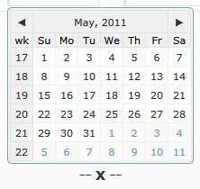
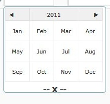
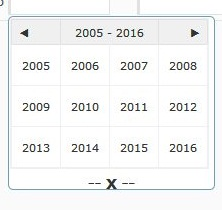

Calendar
Maian Cart uses the excellent free date picker calendar widget created by Stefan Petre. This appears when you click into a date form field and is a fairly simple and flexible calendar.
Options
A couple of options are available to you in the settings. This is to set the date format and also the first day of the week. Access via 'System > General Settings'.
Usage
At first glance, the date picker usage is fairly simple. Click a field and pick a date. However, its has further options allowing you to easily select dates from previous years. When viewing
the calendar, clicking the Month,Year header will display the months for the current year. A further click shows previous years.
Example screenshots:



Styling Calendar
Colours and styling for the calendar is in the main stylesheets:
stylesheet.css
admin/stylesheet.css
These files contain all colour elements for the calendar.